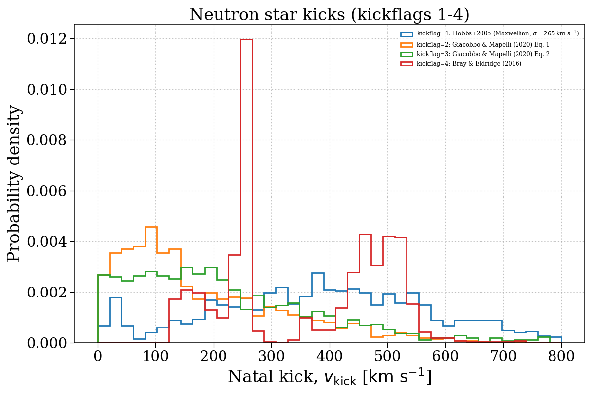
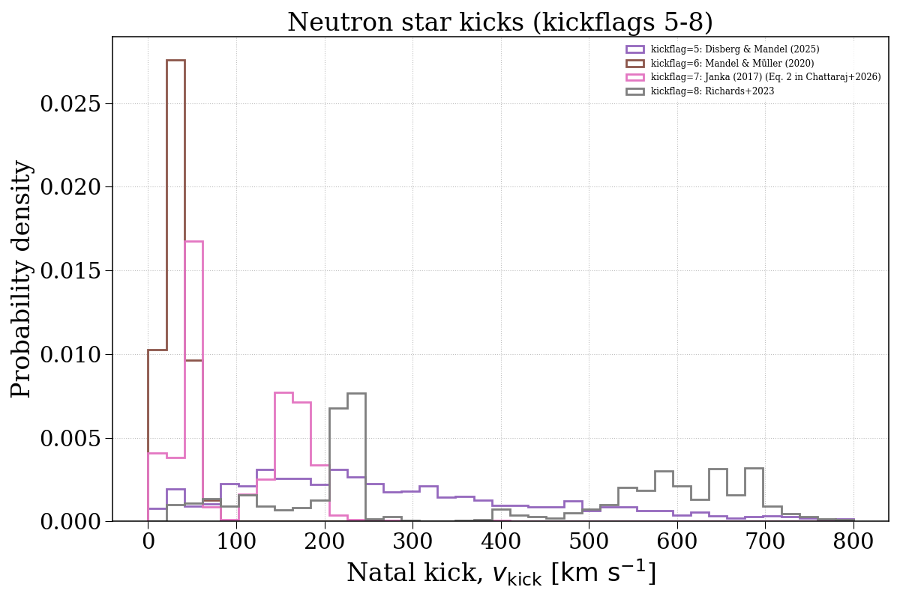
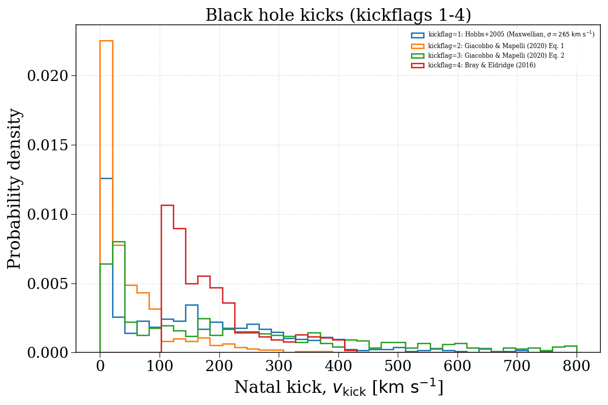
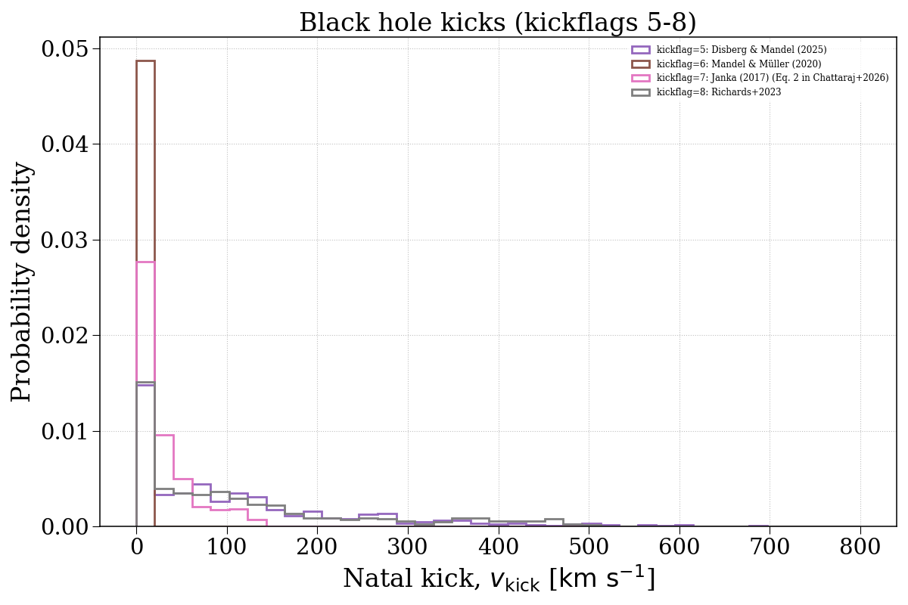

Note
Go to the end to download the full example code.
kickflag¶
This example demonstrates how changing the kickflag parameter can affect the natal kick velocity distributions of compact objects. We separate this into neutron stars and black holes.




Evolving population with kickflag = 1...
Evolving: 0%| | 0/2014 [00:00<?, ?sys/s]
Evolving: 2%|▏ | 34/2014 [00:00<00:11, 174.71sys/s]
Evolving: 4%|▎ | 74/2014 [00:00<00:11, 174.62sys/s]
Evolving: 5%|▍ | 98/2014 [00:00<00:10, 179.00sys/s]
Evolving: 7%|▋ | 138/2014 [00:00<00:07, 238.33sys/s]
Evolving: 8%|▊ | 165/2014 [00:00<00:07, 236.48sys/s]
Evolving: 9%|▉ | 191/2014 [00:00<00:07, 233.19sys/s]
Evolving: 11%|█ | 216/2014 [00:00<00:07, 231.01sys/s]
Evolving: 12%|█▏ | 240/2014 [00:01<00:07, 226.15sys/s]
Evolving: 13%|█▎ | 264/2014 [00:01<00:08, 206.48sys/s]
Evolving: 14%|█▍ | 286/2014 [00:01<00:08, 195.79sys/s]
Evolving: 15%|█▌ | 310/2014 [00:01<00:08, 206.14sys/s]
Evolving: 16%|█▋ | 332/2014 [00:01<00:08, 196.75sys/s]
Evolving: 18%|█▊ | 360/2014 [00:01<00:07, 217.72sys/s]
Evolving: 19%|█▉ | 383/2014 [00:01<00:08, 182.82sys/s]
Evolving: 20%|██ | 403/2014 [00:02<00:10, 161.02sys/s]
Evolving: 21%|██ | 421/2014 [00:02<00:10, 154.72sys/s]
Evolving: 22%|██▏ | 444/2014 [00:02<00:09, 169.87sys/s]
Evolving: 23%|██▎ | 468/2014 [00:02<00:08, 183.53sys/s]
Evolving: 24%|██▍ | 492/2014 [00:02<00:09, 154.35sys/s]
Evolving: 26%|██▋ | 529/2014 [00:02<00:07, 202.13sys/s]
Evolving: 27%|██▋ | 552/2014 [00:02<00:07, 203.83sys/s]
Evolving: 29%|██▊ | 575/2014 [00:02<00:06, 208.65sys/s]
Evolving: 30%|██▉ | 598/2014 [00:03<00:06, 211.87sys/s]
Evolving: 31%|███ | 621/2014 [00:03<00:07, 182.65sys/s]
Evolving: 32%|███▏ | 643/2014 [00:03<00:08, 161.88sys/s]
Evolving: 33%|███▎ | 671/2014 [00:03<00:08, 162.76sys/s]
Evolving: 35%|███▌ | 713/2014 [00:03<00:06, 207.03sys/s]
Evolving: 36%|███▋ | 735/2014 [00:03<00:06, 204.29sys/s]
Evolving: 38%|███▊ | 757/2014 [00:03<00:07, 167.74sys/s]
Evolving: 40%|███▉ | 801/2014 [00:04<00:05, 225.34sys/s]
Evolving: 41%|████ | 827/2014 [00:04<00:06, 195.95sys/s]
Evolving: 42%|████▏ | 851/2014 [00:04<00:05, 197.09sys/s]
Evolving: 43%|████▎ | 873/2014 [00:04<00:05, 196.73sys/s]
Evolving: 45%|████▍ | 903/2014 [00:04<00:05, 217.25sys/s]
Evolving: 46%|████▌ | 929/2014 [00:04<00:04, 225.29sys/s]
Evolving: 47%|████▋ | 953/2014 [00:04<00:04, 215.03sys/s]
Evolving: 48%|████▊ | 976/2014 [00:05<00:05, 178.94sys/s]
Evolving: 50%|█████ | 1013/2014 [00:05<00:04, 220.82sys/s]
Evolving: 52%|█████▏ | 1038/2014 [00:05<00:04, 209.47sys/s]
Evolving: 53%|█████▎ | 1067/2014 [00:05<00:04, 228.99sys/s]
Evolving: 54%|█████▍ | 1092/2014 [00:05<00:04, 225.20sys/s]
Evolving: 55%|█████▌ | 1116/2014 [00:05<00:04, 211.80sys/s]
Evolving: 57%|█████▋ | 1141/2014 [00:05<00:04, 215.62sys/s]
Evolving: 58%|█████▊ | 1164/2014 [00:05<00:03, 215.19sys/s]
Evolving: 59%|█████▉ | 1186/2014 [00:05<00:03, 213.34sys/s]
Evolving: 60%|██████ | 1211/2014 [00:06<00:03, 218.47sys/s]
Evolving: 61%|██████▏ | 1235/2014 [00:06<00:03, 220.27sys/s]
Evolving: 62%|██████▏ | 1258/2014 [00:06<00:03, 208.35sys/s]
Evolving: 64%|██████▎ | 1280/2014 [00:06<00:04, 171.78sys/s]
Evolving: 65%|██████▌ | 1313/2014 [00:06<00:03, 206.89sys/s]
Evolving: 66%|██████▋ | 1336/2014 [00:06<00:03, 187.36sys/s]
Evolving: 68%|██████▊ | 1363/2014 [00:06<00:03, 206.13sys/s]
Evolving: 69%|██████▉ | 1385/2014 [00:06<00:03, 199.35sys/s]
Evolving: 70%|██████▉ | 1407/2014 [00:07<00:03, 201.03sys/s]
Evolving: 71%|███████ | 1429/2014 [00:07<00:02, 201.29sys/s]
Evolving: 72%|███████▏ | 1450/2014 [00:07<00:02, 195.07sys/s]
Evolving: 73%|███████▎ | 1470/2014 [00:07<00:03, 155.34sys/s]
Evolving: 75%|███████▍ | 1508/2014 [00:07<00:02, 201.63sys/s]
Evolving: 76%|███████▌ | 1532/2014 [00:07<00:02, 210.35sys/s]
Evolving: 77%|███████▋ | 1555/2014 [00:07<00:02, 198.94sys/s]
Evolving: 78%|███████▊ | 1576/2014 [00:07<00:02, 199.70sys/s]
Evolving: 80%|███████▉ | 1603/2014 [00:08<00:01, 216.46sys/s]
Evolving: 81%|████████ | 1626/2014 [00:08<00:01, 210.81sys/s]
Evolving: 82%|████████▏ | 1651/2014 [00:08<00:02, 175.28sys/s]
Evolving: 84%|████████▎ | 1682/2014 [00:08<00:01, 201.75sys/s]
Evolving: 85%|████████▍ | 1704/2014 [00:08<00:01, 178.98sys/s]
Evolving: 86%|████████▌ | 1734/2014 [00:08<00:01, 202.56sys/s]
Evolving: 87%|████████▋ | 1756/2014 [00:08<00:01, 162.77sys/s]
Evolving: 89%|████████▊ | 1785/2014 [00:09<00:01, 188.75sys/s]
Evolving: 90%|████████▉ | 1807/2014 [00:09<00:01, 193.70sys/s]
Evolving: 91%|█████████ | 1834/2014 [00:09<00:00, 208.05sys/s]
Evolving: 92%|█████████▏| 1861/2014 [00:09<00:00, 220.53sys/s]
Evolving: 94%|█████████▎| 1885/2014 [00:09<00:00, 173.59sys/s]
Evolving: 95%|█████████▌| 1920/2014 [00:09<00:00, 168.94sys/s]
Evolving: 97%|█████████▋| 1962/2014 [00:09<00:00, 215.95sys/s]
Evolving: 99%|█████████▊| 1987/2014 [00:10<00:00, 213.51sys/s]
Evolving: 100%|█████████▉| 2012/2014 [00:10<00:00, 219.51sys/s]
Evolving: 100%|██████████| 2014/2014 [00:10<00:00, 199.12sys/s]
[Time taken: 10.3422 seconds]
Evolving population with kickflag = 2...
Evolving: 0%| | 0/2014 [00:00<?, ?sys/s]
Evolving: 1%| | 17/2014 [00:00<00:13, 151.64sys/s]
Evolving: 2%|▏ | 34/2014 [00:00<00:16, 116.59sys/s]
Evolving: 4%|▎ | 74/2014 [00:00<00:11, 163.85sys/s]
Evolving: 5%|▍ | 98/2014 [00:00<00:11, 168.63sys/s]
Evolving: 7%|▋ | 137/2014 [00:00<00:08, 226.62sys/s]
Evolving: 8%|▊ | 162/2014 [00:00<00:08, 222.57sys/s]
Evolving: 9%|▉ | 186/2014 [00:00<00:08, 223.84sys/s]
Evolving: 10%|█ | 210/2014 [00:01<00:07, 228.17sys/s]
Evolving: 12%|█▏ | 236/2014 [00:01<00:08, 216.68sys/s]
Evolving: 13%|█▎ | 259/2014 [00:01<00:08, 198.30sys/s]
Evolving: 14%|█▍ | 285/2014 [00:01<00:08, 208.73sys/s]
Evolving: 15%|█▌ | 307/2014 [00:01<00:08, 206.11sys/s]
Evolving: 16%|█▋ | 330/2014 [00:01<00:07, 211.37sys/s]
Evolving: 17%|█▋ | 352/2014 [00:01<00:07, 212.97sys/s]
Evolving: 19%|█▊ | 374/2014 [00:01<00:08, 183.37sys/s]
Evolving: 20%|█▉ | 397/2014 [00:02<00:10, 156.07sys/s]
Evolving: 21%|██ | 418/2014 [00:02<00:10, 155.86sys/s]
Evolving: 22%|██▏ | 443/2014 [00:02<00:08, 177.45sys/s]
Evolving: 23%|██▎ | 464/2014 [00:02<00:08, 183.22sys/s]
Evolving: 24%|██▍ | 488/2014 [00:02<00:07, 190.93sys/s]
Evolving: 25%|██▌ | 508/2014 [00:02<00:08, 178.28sys/s]
Evolving: 26%|██▋ | 533/2014 [00:02<00:07, 192.49sys/s]
Evolving: 28%|██▊ | 559/2014 [00:02<00:07, 206.98sys/s]
Evolving: 29%|██▉ | 583/2014 [00:02<00:06, 214.87sys/s]
Evolving: 30%|███ | 605/2014 [00:03<00:06, 210.02sys/s]
Evolving: 31%|███ | 627/2014 [00:03<00:07, 192.12sys/s]
Evolving: 32%|███▏ | 647/2014 [00:03<00:08, 169.79sys/s]
Evolving: 33%|███▎ | 671/2014 [00:03<00:08, 167.17sys/s]
Evolving: 35%|███▌ | 705/2014 [00:03<00:06, 203.38sys/s]
Evolving: 36%|███▌ | 727/2014 [00:03<00:06, 198.69sys/s]
Evolving: 37%|███▋ | 752/2014 [00:03<00:05, 211.10sys/s]
Evolving: 38%|███▊ | 774/2014 [00:04<00:06, 200.65sys/s]
Evolving: 39%|███▉ | 795/2014 [00:04<00:06, 199.54sys/s]
Evolving: 41%|████ | 816/2014 [00:04<00:06, 183.67sys/s]
Evolving: 42%|████▏ | 843/2014 [00:04<00:05, 195.77sys/s]
Evolving: 43%|████▎ | 868/2014 [00:04<00:05, 207.05sys/s]
Evolving: 44%|████▍ | 891/2014 [00:04<00:05, 212.92sys/s]
Evolving: 45%|████▌ | 913/2014 [00:04<00:05, 212.60sys/s]
Evolving: 47%|████▋ | 940/2014 [00:04<00:04, 225.73sys/s]
Evolving: 48%|████▊ | 963/2014 [00:04<00:05, 209.71sys/s]
Evolving: 49%|████▉ | 985/2014 [00:05<00:05, 196.10sys/s]
Evolving: 50%|█████ | 1008/2014 [00:05<00:04, 202.24sys/s]
Evolving: 51%|█████▏ | 1035/2014 [00:05<00:04, 200.14sys/s]
Evolving: 53%|█████▎ | 1067/2014 [00:05<00:04, 226.06sys/s]
Evolving: 54%|█████▍ | 1090/2014 [00:05<00:04, 221.13sys/s]
Evolving: 55%|█████▌ | 1113/2014 [00:05<00:04, 205.83sys/s]
Evolving: 57%|█████▋ | 1138/2014 [00:05<00:04, 217.28sys/s]
Evolving: 58%|█████▊ | 1161/2014 [00:05<00:03, 220.46sys/s]
Evolving: 59%|█████▉ | 1184/2014 [00:05<00:03, 215.62sys/s]
Evolving: 60%|█████▉ | 1206/2014 [00:06<00:03, 209.73sys/s]
Evolving: 61%|██████ | 1233/2014 [00:06<00:03, 220.34sys/s]
Evolving: 62%|██████▏ | 1256/2014 [00:06<00:03, 205.74sys/s]
Evolving: 63%|██████▎ | 1277/2014 [00:06<00:04, 170.06sys/s]
Evolving: 65%|██████▌ | 1311/2014 [00:06<00:03, 210.70sys/s]
Evolving: 66%|██████▌ | 1334/2014 [00:06<00:03, 190.75sys/s]
Evolving: 68%|██████▊ | 1360/2014 [00:06<00:03, 204.15sys/s]
Evolving: 69%|██████▊ | 1382/2014 [00:06<00:03, 201.60sys/s]
Evolving: 70%|██████▉ | 1407/2014 [00:07<00:02, 211.85sys/s]
Evolving: 71%|███████ | 1429/2014 [00:07<00:02, 204.65sys/s]
Evolving: 72%|███████▏ | 1450/2014 [00:07<00:02, 192.02sys/s]
Evolving: 73%|███████▎ | 1470/2014 [00:07<00:03, 156.50sys/s]
Evolving: 75%|███████▍ | 1508/2014 [00:07<00:02, 201.30sys/s]
Evolving: 76%|███████▌ | 1533/2014 [00:07<00:02, 204.75sys/s]
Evolving: 77%|███████▋ | 1555/2014 [00:07<00:02, 202.47sys/s]
Evolving: 78%|███████▊ | 1580/2014 [00:07<00:02, 211.42sys/s]
Evolving: 80%|███████▉ | 1603/2014 [00:08<00:01, 210.75sys/s]
Evolving: 81%|████████ | 1627/2014 [00:08<00:01, 216.07sys/s]
Evolving: 82%|████████▏ | 1651/2014 [00:08<00:02, 176.99sys/s]
Evolving: 84%|████████▎ | 1684/2014 [00:08<00:01, 210.13sys/s]
Evolving: 85%|████████▍ | 1707/2014 [00:08<00:01, 166.52sys/s]
Evolving: 87%|████████▋ | 1747/2014 [00:08<00:01, 201.58sys/s]
Evolving: 88%|████████▊ | 1770/2014 [00:08<00:01, 204.25sys/s]
Evolving: 89%|████████▉ | 1792/2014 [00:09<00:01, 200.65sys/s]
Evolving: 90%|█████████ | 1814/2014 [00:09<00:01, 198.20sys/s]
Evolving: 91%|█████████ | 1837/2014 [00:09<00:00, 205.28sys/s]
Evolving: 92%|█████████▏| 1861/2014 [00:09<00:00, 213.58sys/s]
Evolving: 93%|█████████▎| 1883/2014 [00:09<00:00, 168.22sys/s]
Evolving: 95%|█████████▌| 1920/2014 [00:09<00:00, 168.34sys/s]
Evolving: 97%|█████████▋| 1962/2014 [00:09<00:00, 217.16sys/s]
Evolving: 99%|█████████▊| 1987/2014 [00:09<00:00, 222.54sys/s]
Evolving: 100%|█████████▉| 2012/2014 [00:10<00:00, 223.75sys/s]
Evolving: 100%|██████████| 2014/2014 [00:10<00:00, 199.36sys/s]
[Time taken: 10.2332 seconds]
Evolving population with kickflag = 3...
Evolving: 0%| | 0/2014 [00:00<?, ?sys/s]
Evolving: 1%| | 17/2014 [00:00<00:14, 136.65sys/s]
Evolving: 2%|▏ | 34/2014 [00:00<00:17, 115.10sys/s]
Evolving: 4%|▎ | 74/2014 [00:00<00:12, 161.03sys/s]
Evolving: 5%|▍ | 98/2014 [00:00<00:11, 161.87sys/s]
Evolving: 7%|▋ | 138/2014 [00:00<00:08, 221.35sys/s]
Evolving: 8%|▊ | 163/2014 [00:00<00:08, 228.65sys/s]
Evolving: 9%|▉ | 188/2014 [00:00<00:07, 230.30sys/s]
Evolving: 11%|█ | 213/2014 [00:01<00:07, 230.03sys/s]
Evolving: 12%|█▏ | 237/2014 [00:01<00:08, 215.84sys/s]
Evolving: 13%|█▎ | 260/2014 [00:01<00:08, 204.21sys/s]
Evolving: 14%|█▍ | 285/2014 [00:01<00:08, 209.16sys/s]
Evolving: 15%|█▌ | 307/2014 [00:01<00:08, 206.59sys/s]
Evolving: 16%|█▋ | 329/2014 [00:01<00:08, 207.02sys/s]
Evolving: 17%|█▋ | 352/2014 [00:01<00:07, 212.09sys/s]
Evolving: 19%|█▊ | 374/2014 [00:01<00:08, 183.41sys/s]
Evolving: 20%|█▉ | 397/2014 [00:02<00:10, 156.20sys/s]
Evolving: 21%|██ | 418/2014 [00:02<00:09, 161.00sys/s]
Evolving: 22%|██▏ | 439/2014 [00:02<00:09, 172.54sys/s]
Evolving: 23%|██▎ | 463/2014 [00:02<00:08, 188.21sys/s]
Evolving: 24%|██▍ | 485/2014 [00:02<00:07, 194.35sys/s]
Evolving: 25%|██▌ | 506/2014 [00:02<00:08, 178.29sys/s]
Evolving: 26%|██▋ | 530/2014 [00:02<00:07, 193.78sys/s]
Evolving: 27%|██▋ | 552/2014 [00:02<00:07, 198.03sys/s]
Evolving: 29%|██▊ | 577/2014 [00:02<00:06, 208.65sys/s]
Evolving: 30%|██▉ | 601/2014 [00:03<00:06, 213.82sys/s]
Evolving: 31%|███ | 623/2014 [00:03<00:07, 194.27sys/s]
Evolving: 32%|███▏ | 643/2014 [00:03<00:08, 164.19sys/s]
Evolving: 33%|███▎ | 671/2014 [00:03<00:08, 158.06sys/s]
Evolving: 35%|███▌ | 713/2014 [00:03<00:06, 207.98sys/s]
Evolving: 37%|███▋ | 736/2014 [00:03<00:06, 210.53sys/s]
Evolving: 38%|███▊ | 759/2014 [00:04<00:07, 174.61sys/s]
Evolving: 39%|███▉ | 795/2014 [00:04<00:05, 210.91sys/s]
Evolving: 41%|████ | 819/2014 [00:04<00:06, 194.22sys/s]
Evolving: 42%|████▏ | 844/2014 [00:04<00:05, 206.76sys/s]
Evolving: 43%|████▎ | 867/2014 [00:04<00:05, 204.95sys/s]
Evolving: 44%|████▍ | 891/2014 [00:04<00:05, 210.04sys/s]
Evolving: 46%|████▌ | 918/2014 [00:04<00:04, 219.21sys/s]
Evolving: 47%|████▋ | 945/2014 [00:04<00:04, 226.68sys/s]
Evolving: 48%|████▊ | 969/2014 [00:04<00:04, 218.86sys/s]
Evolving: 49%|████▉ | 992/2014 [00:05<00:04, 206.11sys/s]
Evolving: 50%|█████ | 1013/2014 [00:05<00:04, 204.30sys/s]
Evolving: 51%|█████▏ | 1035/2014 [00:05<00:04, 197.78sys/s]
Evolving: 53%|█████▎ | 1067/2014 [00:05<00:04, 227.07sys/s]
Evolving: 54%|█████▍ | 1091/2014 [00:05<00:04, 221.31sys/s]
Evolving: 55%|█████▌ | 1114/2014 [00:05<00:04, 213.07sys/s]
Evolving: 57%|█████▋ | 1140/2014 [00:05<00:03, 220.52sys/s]
Evolving: 58%|█████▊ | 1163/2014 [00:05<00:03, 221.10sys/s]
Evolving: 59%|█████▉ | 1186/2014 [00:05<00:03, 219.44sys/s]
Evolving: 60%|██████ | 1209/2014 [00:06<00:03, 216.92sys/s]
Evolving: 61%|██████ | 1231/2014 [00:06<00:03, 214.68sys/s]
Evolving: 62%|██████▏ | 1253/2014 [00:06<00:03, 204.02sys/s]
Evolving: 63%|██████▎ | 1274/2014 [00:06<00:04, 164.97sys/s]
Evolving: 65%|██████▌ | 1310/2014 [00:06<00:03, 203.81sys/s]
Evolving: 66%|██████▌ | 1332/2014 [00:06<00:03, 187.52sys/s]
Evolving: 67%|██████▋ | 1359/2014 [00:06<00:03, 207.48sys/s]
Evolving: 69%|██████▊ | 1381/2014 [00:06<00:03, 198.12sys/s]
Evolving: 70%|██████▉ | 1406/2014 [00:07<00:02, 210.29sys/s]
Evolving: 71%|███████ | 1428/2014 [00:07<00:02, 202.33sys/s]
Evolving: 72%|███████▏ | 1449/2014 [00:07<00:02, 193.42sys/s]
Evolving: 73%|███████▎ | 1469/2014 [00:07<00:03, 149.53sys/s]
Evolving: 75%|███████▍ | 1508/2014 [00:07<00:02, 203.01sys/s]
Evolving: 76%|███████▌ | 1532/2014 [00:07<00:02, 205.51sys/s]
Evolving: 77%|███████▋ | 1555/2014 [00:07<00:02, 190.41sys/s]
Evolving: 79%|███████▊ | 1582/2014 [00:07<00:02, 205.71sys/s]
Evolving: 80%|███████▉ | 1606/2014 [00:08<00:01, 211.35sys/s]
Evolving: 81%|████████ | 1630/2014 [00:08<00:01, 213.75sys/s]
Evolving: 82%|████████▏ | 1653/2014 [00:08<00:02, 172.91sys/s]
Evolving: 84%|████████▎ | 1685/2014 [00:08<00:01, 203.06sys/s]
Evolving: 85%|████████▍ | 1708/2014 [00:08<00:01, 163.70sys/s]
Evolving: 87%|████████▋ | 1746/2014 [00:08<00:01, 209.49sys/s]
Evolving: 88%|████████▊ | 1771/2014 [00:08<00:01, 190.37sys/s]
Evolving: 89%|████████▉ | 1793/2014 [00:09<00:01, 196.56sys/s]
Evolving: 90%|█████████ | 1815/2014 [00:09<00:00, 199.81sys/s]
Evolving: 91%|█████████ | 1837/2014 [00:09<00:00, 204.47sys/s]
Evolving: 92%|█████████▏| 1859/2014 [00:09<00:00, 206.25sys/s]
Evolving: 93%|█████████▎| 1881/2014 [00:09<00:00, 203.03sys/s]
Evolving: 94%|█████████▍| 1902/2014 [00:09<00:00, 191.31sys/s]
Evolving: 95%|█████████▌| 1922/2014 [00:09<00:00, 152.75sys/s]
Evolving: 98%|█████████▊| 1965/2014 [00:09<00:00, 214.42sys/s]
Evolving: 99%|█████████▉| 1989/2014 [00:10<00:00, 209.59sys/s]
Evolving: 100%|██████████| 2014/2014 [00:10<00:00, 219.52sys/s]
Evolving: 100%|██████████| 2014/2014 [00:10<00:00, 198.35sys/s]
[Time taken: 10.2913 seconds]
Evolving population with kickflag = 4...
Evolving: 0%| | 0/2014 [00:00<?, ?sys/s]
Evolving: 1%| | 11/2014 [00:00<00:19, 105.42sys/s]
Evolving: 2%|▏ | 34/2014 [00:00<00:16, 120.33sys/s]
Evolving: 4%|▎ | 74/2014 [00:00<00:12, 161.32sys/s]
Evolving: 5%|▍ | 98/2014 [00:00<00:11, 162.66sys/s]
Evolving: 7%|▋ | 136/2014 [00:00<00:08, 218.11sys/s]
Evolving: 8%|▊ | 160/2014 [00:00<00:08, 213.02sys/s]
Evolving: 9%|▉ | 186/2014 [00:00<00:08, 219.02sys/s]
Evolving: 11%|█ | 215/2014 [00:01<00:07, 234.67sys/s]
Evolving: 12%|█▏ | 240/2014 [00:01<00:07, 226.46sys/s]
Evolving: 13%|█▎ | 264/2014 [00:01<00:08, 213.41sys/s]
Evolving: 14%|█▍ | 286/2014 [00:01<00:08, 211.08sys/s]
Evolving: 15%|█▌ | 308/2014 [00:01<00:08, 199.95sys/s]
Evolving: 16%|█▋ | 332/2014 [00:01<00:08, 188.64sys/s]
Evolving: 18%|█▊ | 364/2014 [00:01<00:07, 217.50sys/s]
Evolving: 19%|█▉ | 387/2014 [00:01<00:08, 194.48sys/s]
Evolving: 20%|██ | 408/2014 [00:02<00:10, 152.03sys/s]
Evolving: 21%|██ | 425/2014 [00:02<00:10, 146.59sys/s]
Evolving: 23%|██▎ | 458/2014 [00:02<00:08, 184.55sys/s]
Evolving: 24%|██▍ | 481/2014 [00:02<00:07, 192.21sys/s]
Evolving: 25%|██▍ | 502/2014 [00:02<00:08, 169.73sys/s]
Evolving: 26%|██▋ | 532/2014 [00:02<00:07, 198.32sys/s]
Evolving: 28%|██▊ | 554/2014 [00:02<00:07, 203.16sys/s]
Evolving: 29%|██▉ | 580/2014 [00:02<00:06, 217.78sys/s]
Evolving: 30%|██▉ | 603/2014 [00:03<00:06, 215.49sys/s]
Evolving: 31%|███ | 626/2014 [00:03<00:06, 200.76sys/s]
Evolving: 32%|███▏ | 647/2014 [00:03<00:07, 174.77sys/s]
Evolving: 33%|███▎ | 671/2014 [00:03<00:08, 156.64sys/s]
Evolving: 35%|███▌ | 713/2014 [00:03<00:06, 205.28sys/s]
Evolving: 37%|███▋ | 736/2014 [00:03<00:06, 209.86sys/s]
Evolving: 38%|███▊ | 759/2014 [00:04<00:07, 172.10sys/s]
Evolving: 40%|███▉ | 797/2014 [00:04<00:05, 217.98sys/s]
Evolving: 41%|████ | 822/2014 [00:04<00:05, 206.99sys/s]
Evolving: 42%|████▏ | 845/2014 [00:04<00:05, 210.50sys/s]
Evolving: 43%|████▎ | 868/2014 [00:04<00:05, 207.04sys/s]
Evolving: 44%|████▍ | 891/2014 [00:04<00:05, 211.80sys/s]
Evolving: 45%|████▌ | 915/2014 [00:04<00:05, 219.09sys/s]
Evolving: 47%|████▋ | 940/2014 [00:04<00:04, 225.65sys/s]
Evolving: 48%|████▊ | 964/2014 [00:04<00:04, 222.61sys/s]
Evolving: 49%|████▉ | 987/2014 [00:05<00:05, 203.10sys/s]
Evolving: 50%|█████ | 1011/2014 [00:05<00:04, 208.50sys/s]
Evolving: 51%|█████▏ | 1035/2014 [00:05<00:04, 198.64sys/s]
Evolving: 53%|█████▎ | 1067/2014 [00:05<00:04, 217.47sys/s]
Evolving: 54%|█████▍ | 1090/2014 [00:05<00:04, 212.65sys/s]
Evolving: 55%|█████▌ | 1115/2014 [00:05<00:04, 222.02sys/s]
Evolving: 57%|█████▋ | 1140/2014 [00:05<00:03, 227.67sys/s]
Evolving: 58%|█████▊ | 1163/2014 [00:05<00:03, 225.51sys/s]
Evolving: 59%|█████▉ | 1186/2014 [00:05<00:03, 221.22sys/s]
Evolving: 60%|██████ | 1210/2014 [00:06<00:03, 224.42sys/s]
Evolving: 61%|██████ | 1233/2014 [00:06<00:03, 217.44sys/s]
Evolving: 62%|██████▏ | 1255/2014 [00:06<00:03, 212.35sys/s]
Evolving: 63%|██████▎ | 1277/2014 [00:06<00:04, 173.22sys/s]
Evolving: 65%|██████▌ | 1313/2014 [00:06<00:03, 208.99sys/s]
Evolving: 66%|██████▋ | 1335/2014 [00:06<00:03, 200.43sys/s]
Evolving: 67%|██████▋ | 1357/2014 [00:06<00:03, 202.66sys/s]
Evolving: 68%|██████▊ | 1379/2014 [00:06<00:03, 204.29sys/s]
Evolving: 70%|██████▉ | 1404/2014 [00:06<00:02, 212.96sys/s]
Evolving: 71%|███████ | 1426/2014 [00:07<00:02, 207.25sys/s]
Evolving: 72%|███████▏ | 1447/2014 [00:07<00:02, 191.81sys/s]
Evolving: 73%|███████▎ | 1467/2014 [00:07<00:03, 154.45sys/s]
Evolving: 75%|███████▍ | 1503/2014 [00:07<00:02, 201.30sys/s]
Evolving: 76%|███████▌ | 1526/2014 [00:07<00:02, 206.79sys/s]
Evolving: 77%|███████▋ | 1550/2014 [00:07<00:02, 209.49sys/s]
Evolving: 78%|███████▊ | 1573/2014 [00:07<00:02, 210.96sys/s]
Evolving: 79%|███████▉ | 1597/2014 [00:07<00:01, 217.90sys/s]
Evolving: 80%|████████ | 1620/2014 [00:08<00:01, 215.67sys/s]
Evolving: 82%|████████▏ | 1643/2014 [00:08<00:01, 213.47sys/s]
Evolving: 83%|████████▎ | 1665/2014 [00:08<00:01, 202.57sys/s]
Evolving: 84%|████████▎ | 1686/2014 [00:08<00:01, 197.30sys/s]
Evolving: 85%|████████▍ | 1706/2014 [00:08<00:01, 155.71sys/s]
Evolving: 87%|████████▋ | 1743/2014 [00:08<00:01, 200.35sys/s]
Evolving: 88%|████████▊ | 1765/2014 [00:08<00:01, 185.25sys/s]
Evolving: 89%|████████▊ | 1785/2014 [00:08<00:01, 184.05sys/s]
Evolving: 90%|████████▉ | 1811/2014 [00:09<00:01, 192.57sys/s]
Evolving: 91%|█████████▏| 1838/2014 [00:09<00:00, 209.19sys/s]
Evolving: 92%|█████████▏| 1862/2014 [00:09<00:00, 202.91sys/s]
Evolving: 93%|█████████▎| 1883/2014 [00:09<00:00, 174.71sys/s]
Evolving: 95%|█████████▌| 1920/2014 [00:09<00:00, 178.36sys/s]
Evolving: 97%|█████████▋| 1960/2014 [00:09<00:00, 225.70sys/s]
Evolving: 99%|█████████▊| 1985/2014 [00:09<00:00, 226.83sys/s]
Evolving: 100%|█████████▉| 2010/2014 [00:10<00:00, 227.97sys/s]
Evolving: 100%|██████████| 2014/2014 [00:10<00:00, 200.81sys/s]
[Time taken: 10.1656 seconds]
Evolving population with kickflag = 5...
Evolving: 0%| | 0/2014 [00:00<?, ?sys/s]
Evolving: 1%| | 17/2014 [00:00<00:13, 144.34sys/s]
Evolving: 2%|▏ | 34/2014 [00:00<00:16, 120.63sys/s]
Evolving: 4%|▎ | 74/2014 [00:00<00:11, 165.64sys/s]
Evolving: 5%|▍ | 98/2014 [00:00<00:11, 160.96sys/s]
Evolving: 7%|▋ | 137/2014 [00:00<00:08, 218.53sys/s]
Evolving: 8%|▊ | 163/2014 [00:00<00:08, 222.95sys/s]
Evolving: 9%|▉ | 190/2014 [00:00<00:07, 228.22sys/s]
Evolving: 11%|█ | 215/2014 [00:01<00:07, 230.86sys/s]
Evolving: 12%|█▏ | 239/2014 [00:01<00:08, 221.30sys/s]
Evolving: 13%|█▎ | 262/2014 [00:01<00:08, 211.06sys/s]
Evolving: 14%|█▍ | 284/2014 [00:01<00:08, 208.82sys/s]
Evolving: 15%|█▌ | 306/2014 [00:01<00:08, 204.18sys/s]
Evolving: 16%|█▋ | 328/2014 [00:01<00:08, 203.44sys/s]
Evolving: 17%|█▋ | 349/2014 [00:01<00:08, 202.36sys/s]
Evolving: 18%|█▊ | 370/2014 [00:01<00:09, 171.81sys/s]
Evolving: 20%|█▉ | 397/2014 [00:02<00:10, 161.29sys/s]
Evolving: 21%|██ | 418/2014 [00:02<00:09, 162.20sys/s]
Evolving: 22%|██▏ | 441/2014 [00:02<00:08, 177.49sys/s]
Evolving: 23%|██▎ | 460/2014 [00:02<00:12, 127.38sys/s]
Evolving: 24%|██▍ | 487/2014 [00:02<00:09, 152.72sys/s]
Evolving: 25%|██▌ | 505/2014 [00:02<00:09, 155.46sys/s]
Evolving: 26%|██▌ | 526/2014 [00:02<00:08, 166.90sys/s]
Evolving: 27%|██▋ | 549/2014 [00:03<00:08, 182.26sys/s]
Evolving: 28%|██▊ | 572/2014 [00:03<00:07, 193.65sys/s]
Evolving: 30%|██▉ | 596/2014 [00:03<00:06, 204.75sys/s]
Evolving: 31%|███ | 618/2014 [00:03<00:08, 171.14sys/s]
Evolving: 32%|███▏ | 643/2014 [00:03<00:08, 165.08sys/s]
Evolving: 33%|███▎ | 671/2014 [00:03<00:08, 161.76sys/s]
Evolving: 35%|███▌ | 711/2014 [00:03<00:06, 213.93sys/s]
Evolving: 36%|███▋ | 735/2014 [00:03<00:06, 212.24sys/s]
Evolving: 38%|███▊ | 758/2014 [00:04<00:07, 172.35sys/s]
Evolving: 40%|███▉ | 799/2014 [00:04<00:05, 219.43sys/s]
Evolving: 41%|████ | 824/2014 [00:04<00:05, 204.92sys/s]
Evolving: 42%|████▏ | 847/2014 [00:04<00:05, 200.95sys/s]
Evolving: 43%|████▎ | 871/2014 [00:04<00:06, 188.57sys/s]
Evolving: 45%|████▍ | 903/2014 [00:04<00:05, 215.08sys/s]
Evolving: 46%|████▌ | 927/2014 [00:04<00:04, 220.91sys/s]
Evolving: 47%|████▋ | 951/2014 [00:05<00:04, 215.01sys/s]
Evolving: 48%|████▊ | 974/2014 [00:05<00:05, 174.99sys/s]
Evolving: 50%|█████ | 1013/2014 [00:05<00:04, 220.22sys/s]
Evolving: 52%|█████▏ | 1038/2014 [00:05<00:04, 212.93sys/s]
Evolving: 53%|█████▎ | 1066/2014 [00:05<00:04, 229.03sys/s]
Evolving: 54%|█████▍ | 1091/2014 [00:05<00:04, 218.81sys/s]
Evolving: 55%|█████▌ | 1114/2014 [00:05<00:04, 213.07sys/s]
Evolving: 57%|█████▋ | 1138/2014 [00:05<00:04, 217.40sys/s]
Evolving: 58%|█████▊ | 1162/2014 [00:05<00:03, 221.10sys/s]
Evolving: 59%|█████▉ | 1185/2014 [00:06<00:03, 220.45sys/s]
Evolving: 60%|█████▉ | 1208/2014 [00:06<00:03, 218.83sys/s]
Evolving: 61%|██████ | 1231/2014 [00:06<00:03, 215.52sys/s]
Evolving: 62%|██████▏ | 1253/2014 [00:06<00:03, 199.80sys/s]
Evolving: 63%|██████▎ | 1274/2014 [00:06<00:04, 164.42sys/s]
Evolving: 65%|██████▌ | 1310/2014 [00:06<00:03, 210.64sys/s]
Evolving: 66%|██████▌ | 1334/2014 [00:06<00:03, 195.19sys/s]
Evolving: 67%|██████▋ | 1358/2014 [00:06<00:03, 205.95sys/s]
Evolving: 69%|██████▊ | 1380/2014 [00:07<00:03, 201.45sys/s]
Evolving: 70%|██████▉ | 1406/2014 [00:07<00:02, 211.79sys/s]
Evolving: 71%|███████ | 1428/2014 [00:07<00:02, 202.63sys/s]
Evolving: 72%|███████▏ | 1449/2014 [00:07<00:02, 191.05sys/s]
Evolving: 73%|███████▎ | 1469/2014 [00:07<00:03, 152.16sys/s]
Evolving: 75%|███████▍ | 1508/2014 [00:07<00:02, 201.64sys/s]
Evolving: 76%|███████▌ | 1531/2014 [00:07<00:02, 203.33sys/s]
Evolving: 77%|███████▋ | 1553/2014 [00:08<00:02, 192.35sys/s]
Evolving: 79%|███████▊ | 1581/2014 [00:08<00:02, 212.34sys/s]
Evolving: 80%|███████▉ | 1605/2014 [00:08<00:01, 217.72sys/s]
Evolving: 81%|████████ | 1628/2014 [00:08<00:01, 215.68sys/s]
Evolving: 82%|████████▏ | 1651/2014 [00:08<00:02, 173.19sys/s]
Evolving: 84%|████████▎ | 1682/2014 [00:08<00:01, 205.34sys/s]
Evolving: 85%|████████▍ | 1705/2014 [00:08<00:01, 177.22sys/s]
Evolving: 86%|████████▌ | 1735/2014 [00:08<00:01, 205.35sys/s]
Evolving: 87%|████████▋ | 1758/2014 [00:09<00:01, 172.86sys/s]
Evolving: 89%|████████▊ | 1785/2014 [00:09<00:01, 186.66sys/s]
Evolving: 90%|████████▉ | 1806/2014 [00:09<00:01, 189.38sys/s]
Evolving: 91%|█████████ | 1836/2014 [00:09<00:00, 214.94sys/s]
Evolving: 92%|█████████▏| 1859/2014 [00:09<00:00, 213.28sys/s]
Evolving: 93%|█████████▎| 1882/2014 [00:09<00:00, 166.97sys/s]
Evolving: 95%|█████████▌| 1920/2014 [00:09<00:00, 171.83sys/s]
Evolving: 97%|█████████▋| 1960/2014 [00:10<00:00, 215.88sys/s]
Evolving: 99%|█████████▊| 1985/2014 [00:10<00:00, 218.96sys/s]
Evolving: 100%|█████████▉| 2009/2014 [00:10<00:00, 223.23sys/s]
Evolving: 100%|██████████| 2014/2014 [00:10<00:00, 195.72sys/s]
[Time taken: 10.4251 seconds]
Evolving population with kickflag = 6...
Evolving: 0%| | 0/2014 [00:00<?, ?sys/s]
Evolving: 1%| | 17/2014 [00:00<00:14, 136.47sys/s]
Evolving: 2%|▏ | 34/2014 [00:00<00:16, 117.66sys/s]
Evolving: 4%|▎ | 73/2014 [00:00<00:09, 213.41sys/s]
Evolving: 5%|▍ | 97/2014 [00:00<00:10, 186.99sys/s]
Evolving: 6%|▌ | 118/2014 [00:00<00:10, 188.87sys/s]
Evolving: 7%|▋ | 140/2014 [00:00<00:09, 197.62sys/s]
Evolving: 8%|▊ | 164/2014 [00:00<00:08, 207.59sys/s]
Evolving: 9%|▉ | 186/2014 [00:00<00:08, 206.91sys/s]
Evolving: 11%|█ | 213/2014 [00:01<00:08, 224.50sys/s]
Evolving: 12%|█▏ | 236/2014 [00:01<00:08, 205.03sys/s]
Evolving: 13%|█▎ | 258/2014 [00:01<00:09, 193.32sys/s]
Evolving: 14%|█▍ | 284/2014 [00:01<00:08, 210.87sys/s]
Evolving: 15%|█▌ | 306/2014 [00:01<00:08, 205.71sys/s]
Evolving: 16%|█▋ | 329/2014 [00:01<00:08, 208.94sys/s]
Evolving: 17%|█▋ | 351/2014 [00:01<00:08, 204.59sys/s]
Evolving: 18%|█▊ | 372/2014 [00:01<00:09, 177.80sys/s]
Evolving: 20%|█▉ | 397/2014 [00:02<00:10, 153.61sys/s]
Evolving: 21%|██ | 418/2014 [00:02<00:10, 155.71sys/s]
Evolving: 22%|██▏ | 443/2014 [00:02<00:09, 173.77sys/s]
Evolving: 23%|██▎ | 467/2014 [00:02<00:08, 186.77sys/s]
Evolving: 24%|██▍ | 492/2014 [00:02<00:09, 157.91sys/s]
Evolving: 26%|██▌ | 527/2014 [00:02<00:07, 198.98sys/s]
Evolving: 27%|██▋ | 550/2014 [00:02<00:07, 205.80sys/s]
Evolving: 28%|██▊ | 573/2014 [00:02<00:06, 211.92sys/s]
Evolving: 30%|██▉ | 598/2014 [00:03<00:06, 216.17sys/s]
Evolving: 31%|███ | 621/2014 [00:03<00:07, 187.61sys/s]
Evolving: 32%|███▏ | 643/2014 [00:03<00:08, 168.70sys/s]
Evolving: 33%|███▎ | 671/2014 [00:03<00:08, 164.70sys/s]
Evolving: 35%|███▌ | 710/2014 [00:03<00:06, 207.09sys/s]
Evolving: 36%|███▋ | 733/2014 [00:03<00:06, 208.21sys/s]
Evolving: 38%|███▊ | 757/2014 [00:04<00:07, 169.92sys/s]
Evolving: 40%|███▉ | 798/2014 [00:04<00:05, 220.75sys/s]
Evolving: 41%|████ | 824/2014 [00:04<00:05, 211.86sys/s]
Evolving: 42%|████▏ | 848/2014 [00:04<00:05, 205.09sys/s]
Evolving: 43%|████▎ | 870/2014 [00:04<00:05, 203.73sys/s]
Evolving: 44%|████▍ | 892/2014 [00:04<00:05, 206.60sys/s]
Evolving: 45%|████▌ | 916/2014 [00:04<00:05, 211.36sys/s]
Evolving: 47%|████▋ | 940/2014 [00:04<00:05, 212.86sys/s]
Evolving: 48%|████▊ | 962/2014 [00:04<00:04, 210.95sys/s]
Evolving: 49%|████▉ | 984/2014 [00:05<00:05, 184.70sys/s]
Evolving: 50%|█████ | 1013/2014 [00:05<00:04, 210.19sys/s]
Evolving: 51%|█████▏ | 1035/2014 [00:05<00:05, 194.92sys/s]
Evolving: 53%|█████▎ | 1066/2014 [00:05<00:04, 221.35sys/s]
Evolving: 54%|█████▍ | 1090/2014 [00:05<00:04, 215.45sys/s]
Evolving: 55%|█████▌ | 1113/2014 [00:05<00:04, 214.63sys/s]
Evolving: 56%|█████▋ | 1136/2014 [00:05<00:04, 217.79sys/s]
Evolving: 58%|█████▊ | 1160/2014 [00:05<00:03, 222.04sys/s]
Evolving: 59%|█████▊ | 1183/2014 [00:05<00:03, 221.94sys/s]
Evolving: 60%|█████▉ | 1206/2014 [00:06<00:03, 213.65sys/s]
Evolving: 61%|██████ | 1231/2014 [00:06<00:03, 220.21sys/s]
Evolving: 62%|██████▏ | 1254/2014 [00:06<00:03, 206.02sys/s]
Evolving: 63%|██████▎ | 1275/2014 [00:06<00:04, 165.82sys/s]
Evolving: 65%|██████▌ | 1313/2014 [00:06<00:03, 212.39sys/s]
Evolving: 66%|██████▋ | 1337/2014 [00:06<00:03, 191.17sys/s]
Evolving: 68%|██████▊ | 1362/2014 [00:06<00:03, 204.15sys/s]
Evolving: 69%|██████▊ | 1384/2014 [00:06<00:03, 205.76sys/s]
Evolving: 70%|██████▉ | 1407/2014 [00:07<00:03, 200.91sys/s]
Evolving: 71%|███████ | 1428/2014 [00:07<00:02, 199.10sys/s]
Evolving: 72%|███████▏ | 1449/2014 [00:07<00:03, 187.49sys/s]
Evolving: 73%|███████▎ | 1469/2014 [00:07<00:03, 150.70sys/s]
Evolving: 75%|███████▍ | 1507/2014 [00:07<00:02, 200.07sys/s]
Evolving: 76%|███████▌ | 1530/2014 [00:07<00:02, 200.88sys/s]
Evolving: 77%|███████▋ | 1552/2014 [00:07<00:02, 184.03sys/s]
Evolving: 78%|███████▊ | 1579/2014 [00:08<00:02, 202.52sys/s]
Evolving: 80%|███████▉ | 1602/2014 [00:08<00:01, 209.03sys/s]
Evolving: 81%|████████ | 1624/2014 [00:08<00:01, 207.79sys/s]
Evolving: 82%|████████▏ | 1646/2014 [00:08<00:01, 206.23sys/s]
Evolving: 83%|████████▎ | 1668/2014 [00:08<00:02, 161.23sys/s]
Evolving: 84%|████████▍ | 1701/2014 [00:08<00:01, 169.20sys/s]
Evolving: 86%|████████▌ | 1733/2014 [00:08<00:01, 201.88sys/s]
Evolving: 87%|████████▋ | 1756/2014 [00:09<00:01, 161.98sys/s]
Evolving: 89%|████████▊ | 1785/2014 [00:09<00:01, 181.02sys/s]
Evolving: 90%|████████▉ | 1812/2014 [00:09<00:01, 191.63sys/s]
Evolving: 91%|█████████ | 1837/2014 [00:09<00:00, 204.57sys/s]
Evolving: 92%|█████████▏| 1860/2014 [00:09<00:00, 209.34sys/s]
Evolving: 93%|█████████▎| 1883/2014 [00:09<00:00, 164.99sys/s]
Evolving: 95%|█████████▌| 1920/2014 [00:09<00:00, 167.48sys/s]
Evolving: 97%|█████████▋| 1960/2014 [00:10<00:00, 213.31sys/s]
Evolving: 99%|█████████▊| 1985/2014 [00:10<00:00, 213.23sys/s]
Evolving: 100%|█████████▉| 2009/2014 [00:10<00:00, 216.48sys/s]
Evolving: 100%|██████████| 2014/2014 [00:10<00:00, 195.90sys/s]
[Time taken: 10.4186 seconds]
Evolving population with kickflag = 7...
Evolving: 0%| | 0/2014 [00:00<?, ?sys/s]
Evolving: 1%| | 17/2014 [00:00<00:14, 138.34sys/s]
Evolving: 2%|▏ | 34/2014 [00:00<00:16, 117.80sys/s]
Evolving: 4%|▎ | 74/2014 [00:00<00:11, 165.07sys/s]
Evolving: 5%|▍ | 98/2014 [00:00<00:12, 159.31sys/s]
Evolving: 7%|▋ | 138/2014 [00:00<00:08, 218.07sys/s]
Evolving: 8%|▊ | 162/2014 [00:00<00:08, 220.74sys/s]
Evolving: 9%|▉ | 186/2014 [00:00<00:08, 218.58sys/s]
Evolving: 11%|█ | 212/2014 [00:01<00:07, 226.46sys/s]
Evolving: 12%|█▏ | 236/2014 [00:01<00:08, 205.57sys/s]
Evolving: 13%|█▎ | 258/2014 [00:01<00:08, 201.06sys/s]
Evolving: 14%|█▍ | 280/2014 [00:01<00:08, 205.49sys/s]
Evolving: 15%|█▍ | 301/2014 [00:01<00:08, 206.34sys/s]
Evolving: 16%|█▌ | 325/2014 [00:01<00:08, 208.17sys/s]
Evolving: 17%|█▋ | 347/2014 [00:01<00:08, 207.90sys/s]
Evolving: 18%|█▊ | 368/2014 [00:01<00:09, 172.07sys/s]
Evolving: 19%|█▉ | 390/2014 [00:02<00:09, 177.39sys/s]
Evolving: 20%|██ | 409/2014 [00:02<00:10, 154.99sys/s]
Evolving: 21%|██ | 426/2014 [00:02<00:10, 145.61sys/s]
Evolving: 23%|██▎ | 459/2014 [00:02<00:08, 181.77sys/s]
Evolving: 24%|██▍ | 483/2014 [00:02<00:08, 190.10sys/s]
Evolving: 25%|██▍ | 503/2014 [00:02<00:08, 178.94sys/s]
Evolving: 26%|██▌ | 527/2014 [00:02<00:07, 191.05sys/s]
Evolving: 27%|██▋ | 552/2014 [00:02<00:07, 200.88sys/s]
Evolving: 29%|██▊ | 576/2014 [00:03<00:06, 210.13sys/s]
Evolving: 30%|██▉ | 598/2014 [00:03<00:06, 210.84sys/s]
Evolving: 31%|███ | 620/2014 [00:03<00:07, 180.53sys/s]
Evolving: 32%|███▏ | 643/2014 [00:03<00:08, 166.34sys/s]
Evolving: 33%|███▎ | 671/2014 [00:03<00:08, 160.09sys/s]
Evolving: 35%|███▌ | 710/2014 [00:03<00:06, 206.43sys/s]
Evolving: 36%|███▋ | 733/2014 [00:03<00:06, 203.29sys/s]
Evolving: 38%|███▊ | 757/2014 [00:04<00:07, 165.93sys/s]
Evolving: 40%|███▉ | 800/2014 [00:04<00:05, 218.94sys/s]
Evolving: 41%|████ | 825/2014 [00:04<00:05, 205.22sys/s]
Evolving: 42%|████▏ | 848/2014 [00:04<00:05, 201.66sys/s]
Evolving: 43%|████▎ | 870/2014 [00:04<00:05, 199.70sys/s]
Evolving: 44%|████▍ | 894/2014 [00:04<00:05, 208.07sys/s]
Evolving: 45%|████▌ | 916/2014 [00:04<00:05, 209.98sys/s]
Evolving: 47%|████▋ | 940/2014 [00:04<00:05, 204.02sys/s]
Evolving: 48%|████▊ | 965/2014 [00:05<00:04, 212.28sys/s]
Evolving: 49%|████▉ | 987/2014 [00:05<00:05, 198.11sys/s]
Evolving: 50%|█████ | 1008/2014 [00:05<00:05, 198.51sys/s]
Evolving: 51%|█████▏ | 1034/2014 [00:05<00:04, 211.10sys/s]
Evolving: 52%|█████▏ | 1056/2014 [00:05<00:04, 213.45sys/s]
Evolving: 54%|█████▎ | 1078/2014 [00:05<00:04, 211.80sys/s]
Evolving: 55%|█████▍ | 1101/2014 [00:05<00:04, 216.57sys/s]
Evolving: 56%|█████▌ | 1123/2014 [00:05<00:04, 210.03sys/s]
Evolving: 57%|█████▋ | 1145/2014 [00:05<00:04, 210.56sys/s]
Evolving: 58%|█████▊ | 1167/2014 [00:05<00:04, 195.10sys/s]
Evolving: 59%|█████▉ | 1197/2014 [00:06<00:03, 220.41sys/s]
Evolving: 61%|██████ | 1220/2014 [00:06<00:03, 214.87sys/s]
Evolving: 62%|██████▏ | 1242/2014 [00:06<00:04, 179.04sys/s]
Evolving: 63%|██████▎ | 1273/2014 [00:06<00:04, 167.34sys/s]
Evolving: 65%|██████▌ | 1311/2014 [00:06<00:03, 213.07sys/s]
Evolving: 66%|██████▋ | 1335/2014 [00:06<00:03, 199.68sys/s]
Evolving: 67%|██████▋ | 1357/2014 [00:06<00:03, 203.55sys/s]
Evolving: 68%|██████▊ | 1379/2014 [00:07<00:03, 196.49sys/s]
Evolving: 70%|██████▉ | 1403/2014 [00:07<00:02, 205.54sys/s]
Evolving: 71%|███████ | 1425/2014 [00:07<00:03, 195.33sys/s]
Evolving: 72%|███████▏ | 1446/2014 [00:07<00:03, 183.82sys/s]
Evolving: 73%|███████▎ | 1465/2014 [00:07<00:03, 149.12sys/s]
Evolving: 75%|███████▍ | 1504/2014 [00:07<00:02, 197.22sys/s]
Evolving: 76%|███████▌ | 1527/2014 [00:07<00:02, 204.25sys/s]
Evolving: 77%|███████▋ | 1549/2014 [00:07<00:02, 204.38sys/s]
Evolving: 78%|███████▊ | 1571/2014 [00:08<00:02, 196.74sys/s]
Evolving: 79%|███████▉ | 1595/2014 [00:08<00:02, 199.06sys/s]
Evolving: 80%|████████ | 1620/2014 [00:08<00:01, 212.42sys/s]
Evolving: 82%|████████▏ | 1642/2014 [00:08<00:01, 208.46sys/s]
Evolving: 83%|████████▎ | 1664/2014 [00:08<00:01, 191.73sys/s]
Evolving: 84%|████████▎ | 1684/2014 [00:08<00:01, 188.87sys/s]
Evolving: 85%|████████▍ | 1704/2014 [00:08<00:01, 160.46sys/s]
Evolving: 86%|████████▌ | 1733/2014 [00:08<00:01, 186.91sys/s]
Evolving: 87%|████████▋ | 1753/2014 [00:09<00:01, 154.94sys/s]
Evolving: 89%|████████▊ | 1785/2014 [00:09<00:01, 177.24sys/s]
Evolving: 90%|████████▉ | 1806/2014 [00:09<00:01, 183.54sys/s]
Evolving: 91%|█████████ | 1830/2014 [00:09<00:00, 193.53sys/s]
Evolving: 92%|█████████▏| 1858/2014 [00:09<00:00, 215.61sys/s]
Evolving: 93%|█████████▎| 1881/2014 [00:09<00:00, 209.81sys/s]
Evolving: 94%|█████████▍| 1903/2014 [00:09<00:00, 193.61sys/s]
Evolving: 95%|█████████▌| 1923/2014 [00:10<00:00, 158.71sys/s]
Evolving: 97%|█████████▋| 1959/2014 [00:10<00:00, 204.68sys/s]
Evolving: 98%|█████████▊| 1982/2014 [00:10<00:00, 203.85sys/s]
Evolving: 100%|█████████▉| 2004/2014 [00:10<00:00, 200.77sys/s]
Evolving: 100%|██████████| 2014/2014 [00:10<00:00, 194.39sys/s]
[Time taken: 10.5051 seconds]
Evolving population with kickflag = 8...
Evolving: 0%| | 0/2014 [00:00<?, ?sys/s]
Evolving: 1%| | 11/2014 [00:00<00:18, 109.77sys/s]
Evolving: 2%|▏ | 34/2014 [00:00<00:17, 115.42sys/s]
Evolving: 4%|▎ | 74/2014 [00:00<00:12, 158.94sys/s]
Evolving: 5%|▍ | 98/2014 [00:00<00:12, 157.48sys/s]
Evolving: 7%|▋ | 138/2014 [00:00<00:08, 215.18sys/s]
Evolving: 8%|▊ | 162/2014 [00:00<00:08, 210.25sys/s]
Evolving: 9%|▉ | 188/2014 [00:00<00:08, 220.49sys/s]
Evolving: 11%|█ | 212/2014 [00:01<00:08, 224.56sys/s]
Evolving: 12%|█▏ | 236/2014 [00:01<00:08, 204.80sys/s]
Evolving: 13%|█▎ | 258/2014 [00:01<00:08, 198.62sys/s]
Evolving: 14%|█▍ | 282/2014 [00:01<00:08, 209.20sys/s]
Evolving: 15%|█▌ | 304/2014 [00:01<00:08, 203.76sys/s]
Evolving: 16%|█▌ | 326/2014 [00:01<00:08, 206.47sys/s]
Evolving: 17%|█▋ | 347/2014 [00:01<00:08, 205.86sys/s]
Evolving: 18%|█▊ | 368/2014 [00:01<00:09, 167.80sys/s]
Evolving: 19%|█▉ | 390/2014 [00:02<00:09, 180.34sys/s]
Evolving: 20%|██ | 410/2014 [00:02<00:10, 156.05sys/s]
Evolving: 21%|██ | 427/2014 [00:02<00:10, 150.04sys/s]
Evolving: 22%|██▏ | 453/2014 [00:02<00:08, 176.27sys/s]
Evolving: 24%|██▎ | 478/2014 [00:02<00:08, 191.04sys/s]
Evolving: 25%|██▍ | 499/2014 [00:02<00:08, 169.65sys/s]
Evolving: 26%|██▌ | 525/2014 [00:02<00:07, 189.61sys/s]
Evolving: 27%|██▋ | 549/2014 [00:02<00:07, 200.76sys/s]
Evolving: 28%|██▊ | 572/2014 [00:03<00:06, 206.53sys/s]
Evolving: 29%|██▉ | 594/2014 [00:03<00:06, 210.00sys/s]
Evolving: 31%|███ | 616/2014 [00:03<00:07, 175.21sys/s]
Evolving: 32%|███▏ | 643/2014 [00:03<00:08, 169.05sys/s]
Evolving: 33%|███▎ | 671/2014 [00:03<00:08, 161.40sys/s]
Evolving: 35%|███▌ | 713/2014 [00:03<00:06, 204.65sys/s]
Evolving: 37%|███▋ | 736/2014 [00:03<00:06, 203.87sys/s]
Evolving: 38%|███▊ | 758/2014 [00:04<00:07, 171.25sys/s]
Evolving: 40%|███▉ | 798/2014 [00:04<00:05, 218.95sys/s]
Evolving: 41%|████ | 823/2014 [00:04<00:05, 202.36sys/s]
Evolving: 42%|████▏ | 846/2014 [00:04<00:05, 206.51sys/s]
Evolving: 43%|████▎ | 868/2014 [00:04<00:05, 204.50sys/s]
Evolving: 44%|████▍ | 890/2014 [00:04<00:05, 208.07sys/s]
Evolving: 45%|████▌ | 914/2014 [00:04<00:05, 215.96sys/s]
Evolving: 47%|████▋ | 937/2014 [00:04<00:05, 214.90sys/s]
Evolving: 48%|████▊ | 959/2014 [00:05<00:05, 200.84sys/s]
Evolving: 49%|████▊ | 980/2014 [00:05<00:05, 178.28sys/s]
Evolving: 50%|█████ | 1008/2014 [00:05<00:05, 197.61sys/s]
Evolving: 51%|█████ | 1032/2014 [00:05<00:04, 208.45sys/s]
Evolving: 52%|█████▏ | 1055/2014 [00:05<00:04, 214.07sys/s]
Evolving: 53%|█████▎ | 1077/2014 [00:05<00:04, 206.94sys/s]
Evolving: 55%|█████▍ | 1102/2014 [00:05<00:04, 199.93sys/s]
Evolving: 56%|█████▌ | 1128/2014 [00:05<00:04, 208.76sys/s]
Evolving: 57%|█████▋ | 1150/2014 [00:05<00:04, 204.64sys/s]
Evolving: 58%|█████▊ | 1174/2014 [00:06<00:03, 211.86sys/s]
Evolving: 60%|█████▉ | 1199/2014 [00:06<00:03, 220.66sys/s]
Evolving: 61%|██████ | 1222/2014 [00:06<00:03, 219.49sys/s]
Evolving: 62%|██████▏ | 1245/2014 [00:06<00:04, 178.65sys/s]
Evolving: 63%|██████▎ | 1273/2014 [00:06<00:04, 171.42sys/s]
Evolving: 65%|██████▌ | 1312/2014 [00:06<00:03, 217.32sys/s]
Evolving: 66%|██████▋ | 1336/2014 [00:06<00:03, 191.21sys/s]
Evolving: 68%|██████▊ | 1363/2014 [00:07<00:03, 208.05sys/s]
Evolving: 69%|██████▉ | 1386/2014 [00:07<00:03, 207.38sys/s]
Evolving: 70%|██████▉ | 1408/2014 [00:07<00:02, 207.15sys/s]
Evolving: 71%|███████ | 1430/2014 [00:07<00:02, 200.54sys/s]
Evolving: 72%|███████▏ | 1451/2014 [00:07<00:03, 159.65sys/s]
Evolving: 73%|███████▎ | 1469/2014 [00:07<00:03, 159.15sys/s]
Evolving: 75%|███████▍ | 1507/2014 [00:07<00:02, 210.33sys/s]
Evolving: 76%|███████▌ | 1530/2014 [00:07<00:02, 206.35sys/s]
Evolving: 77%|███████▋ | 1552/2014 [00:08<00:02, 190.52sys/s]
Evolving: 78%|███████▊ | 1576/2014 [00:08<00:02, 201.63sys/s]
Evolving: 79%|███████▉ | 1600/2014 [00:08<00:02, 206.14sys/s]
Evolving: 81%|████████ | 1624/2014 [00:08<00:01, 212.56sys/s]
Evolving: 82%|████████▏ | 1649/2014 [00:08<00:01, 222.26sys/s]
Evolving: 83%|████████▎ | 1672/2014 [00:08<00:01, 173.26sys/s]
Evolving: 84%|████████▍ | 1701/2014 [00:08<00:01, 169.57sys/s]
Evolving: 86%|████████▌ | 1733/2014 [00:08<00:01, 200.47sys/s]
Evolving: 87%|████████▋ | 1755/2014 [00:09<00:01, 165.24sys/s]
Evolving: 89%|████████▊ | 1785/2014 [00:09<00:01, 188.52sys/s]
Evolving: 90%|████████▉ | 1806/2014 [00:09<00:01, 190.60sys/s]
Evolving: 91%|█████████ | 1833/2014 [00:09<00:00, 209.30sys/s]
Evolving: 92%|█████████▏| 1856/2014 [00:09<00:00, 211.89sys/s]
Evolving: 93%|█████████▎| 1879/2014 [00:09<00:00, 206.05sys/s]
Evolving: 94%|█████████▍| 1901/2014 [00:09<00:00, 196.94sys/s]
Evolving: 95%|█████████▌| 1922/2014 [00:10<00:00, 157.53sys/s]
Evolving: 97%|█████████▋| 1961/2014 [00:10<00:00, 209.89sys/s]
Evolving: 99%|█████████▊| 1985/2014 [00:10<00:00, 197.13sys/s]
Evolving: 100%|██████████| 2014/2014 [00:10<00:00, 219.13sys/s]
Evolving: 100%|██████████| 2014/2014 [00:10<00:00, 194.68sys/s]
[Time taken: 10.4906 seconds]
import numpy as np
import pandas as pd
import time
import matplotlib.pyplot as plt
from cosmic.sample.initialbinarytable import InitialBinaryTable
from cosmic.evolve import Evolve
from cosmic.output import COSMICOutput
#----------------------------------------------------------------------------------
#----------------------------------------------------------------------------------
## You'll want to edit this part locally to use your own BSEDict and style sheet!
import sys
sys.path.append("..")
import generate_default_bsedict
BSEDict = generate_default_bsedict.get_default_BSE_settings(to_python=True)
import matplotlib.pyplot as plt
plt.style.use("../_static/gallery.mplstyle")
#----------------------------------------------------------------------------------
#----------------------------------------------------------------------------------
flag_labels = {
1: r"kickflag=1: Hobbs+2005 (Maxwellian, $\sigma=265\ \rm km\ s^{-1}$)",
2: r"kickflag=2: Giacobbo & Mapelli (2020) Eq. 1",
3: r"kickflag=3: Giacobbo & Mapelli (2020) Eq. 2",
4: r"kickflag=4: Bray & Eldridge (2016)",
5: r"kickflag=5: Disberg & Mandel (2025)",
6: r"kickflag=6: Mandel & Müller (2020)",
7: r"kickflag=7: Janka (2017) (Eq. 2 in Chattaraj+2026)",
8: r"kickflag=8: Richards+2023"
}
BINS = np.linspace(0, 800, 40)
# sample a population of neutron stars and black holes
ibt = InitialBinaryTable.sampler(
'independent', [13, 14], [13, 14],
binfrac_model=1.0, primary_model='kroupa01',
ecc_model='sana12', porb_model='sana12',
qmin=-1, SF_start=13700.0, SF_duration=0.0,
met=0.002, size=2000
)[0]
ns_kick_results = {}
bh_kick_results = {}
# go through each kickflag
for flag in flag_labels:
start_time = time.perf_counter()
print(f"Evolving population with kickflag = {flag}...")
# update BSEDict with new kickflag
BSEDict['kickflag'] = flag
# evolve a population and store output in results
bpp, bcm, initC, kick_info = Evolve.evolve(
initialbinarytable=ibt,
BSEDict=BSEDict,
progress=True,
nproc=4
)
results = COSMICOutput(bpp=bpp, bcm=bcm, initC=initC, kick_info=kick_info)
# assign each row in the bpp a unique row_num
results.bpp["row_num"] = np.arange(len(results.bpp))
# find the rows that produce the first and second SNe
first_pre_SN_rows = results.bpp[results.bpp["evol_type"] == 15]
second_pre_SN_rows = results.bpp[results.bpp["evol_type"] == 16]
# convert them to the post SN rows by increasing row_num by one to get the remnant type
first_SN_type = results.bpp[results.bpp["row_num"].isin(first_pre_SN_rows["row_num"] + 1)]["kstar_1"].values
second_SN_type = results.bpp[results.bpp["row_num"].isin(second_pre_SN_rows["row_num"] + 1)]["kstar_2"].values
# split kicks by the first and second
first_kick = results.kick_info[results.kick_info["star"] == 1]["natal_kick"].values
second_kick = results.kick_info[results.kick_info["star"] == 2]["natal_kick"].values
# use information on remnant type to separate into NSs and BHs
ns_kick_results[flag] = np.concatenate([first_kick[first_SN_type == 13], second_kick[second_SN_type == 13]])
bh_kick_results[flag] = np.concatenate([first_kick[first_SN_type == 14], second_kick[second_SN_type == 14]])
end_time = time.perf_counter()
elapsed_time = end_time - start_time
print(f" [Time taken: {elapsed_time:.4f} seconds]")
# plot the results for NSs and BHs separately
for kick_results, title in zip([ns_kick_results, bh_kick_results],
["Neutron star kicks", "Black hole kicks"]):
# separate into four flags at a time to clean up the plot
for flags_to_plot, subtitle in zip([[1, 2, 3, 4], [5, 6, 7, 8]],
["kickflags 1-4", "kickflags 5-8"]):
fig, ax = plt.subplots()
for flag in flags_to_plot:
ax.hist(kick_results[flag], bins=BINS, label=flag_labels[flag], density=True,
histtype="step", lw=2, color=f"C{flag - 1}")
ax.set(
xlabel=r"Natal kick, $v_{\rm kick}$ [$\rm km\ s^{-1}$]",
ylabel=r"Probability density",
title=f"{title} ({subtitle})"
)
ax.grid(True, linestyle=":", alpha=0.5, color="gray")
ax.legend(
loc="upper right",
fontsize=8.5,
facecolor='white',
edgecolor='none',
)
plt.tight_layout()
plt.show()
Total running time of the script: (1 minutes 23.404 seconds)